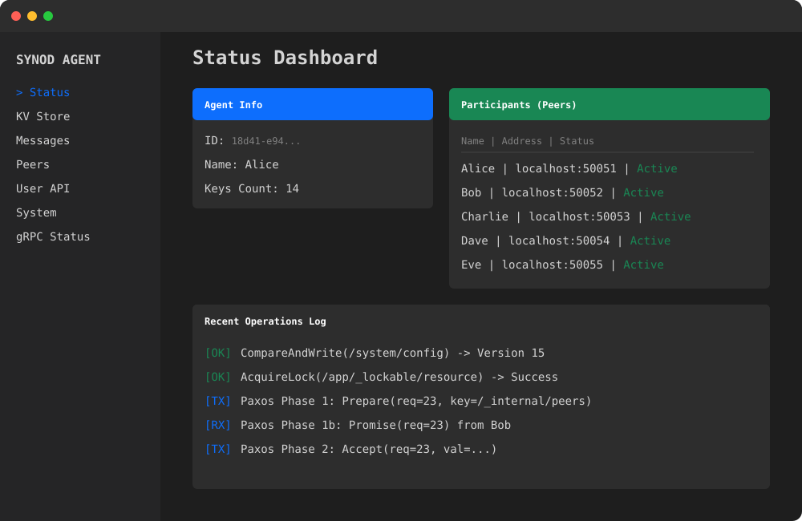

Synod provides a distributed, highly-available Key-Value store backed by SQLite. Built in Go. Shipped with an intuitive web dashboard, hierarchical locks, and dynamic cluster membership.

Synod uses the battle-tested Paxos consensus algorithm to ensure that your data is consistent across the entire network, even when individual nodes fail.
A unified Key-Value store bound to unix-path keys. Values are replicated, versioned, and managed using standard Paxos consensus proposals.
Secure specific paths with built-in distributed locks. Support for `_lockable` segments enables top-down hierarchical exclusion out of the box.
Nodes can dynamically join the cluster via gRPC. Network membership is managed within the KV Store using optimistic concurrency.
Every node ships with an embedded HTTP dashboard. Inspect local state, read raw key-values, and monitor real-time RPC messages.
Durable storage is handled by SQLite natively. Agent states, ledgers, and logs are automatically backed up to your specified state directory.
Customize your consistency! Reads support Local, Majority, and All quorums. Compare-and-Swap (CAS) semantics ensure robust atomic updates.
Synod is built seamlessly with Bazel. Simply define your local state directories and start your agents. Provide a peer endpoint to automatically negotiate cluster joining using Paxos.